DER STILLSTE ORT
RegieM. Hofer
FormatSpielfilm · 96 min
TonDominik Kostolnik
KundeLand Oberösterreich
這個網站有聲音。所有聲音都是即時合成的，沒有預錄音檔。你可以選擇帶著聲音進來，或安靜地看。
ESC 跳過 · 音訊在首次互動後才載入
创意视频制作公司 我们专注于为各种类型产品打造创意理念和时尚产品
我在片場待了十年，做的是觀眾看不見的那一半。 同期收音時我關心一句台詞在哪個房間被說出來；
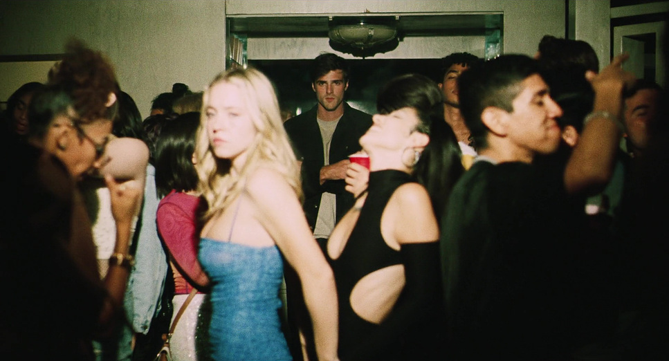
聲音設計時我關心它應該在什麼時候不出現。
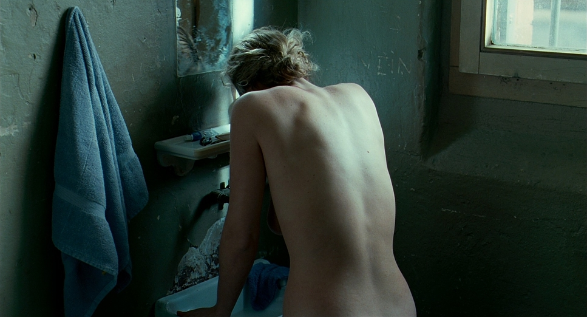
最後一次混音，是把所有決定收斂成一個可以交付的檔案。 Das bedeutet: 好的聲音是隱形的，觀眾只記得畫面。 我拿著麥克風站在畫面外，把空間、距離與節奏錄下來。
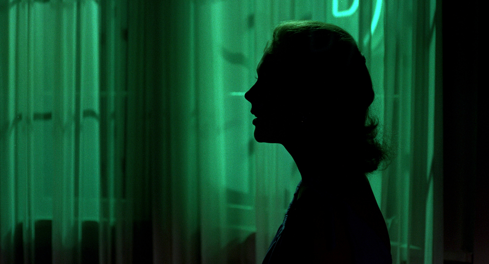
Showreel 2026
02:14 · 5.1
影像作品與鏡頭靜幀分兩區陳列——點擊圖片可進入燈箱瀏覽，點擊視頻卡可使用放大器帶聲播放。
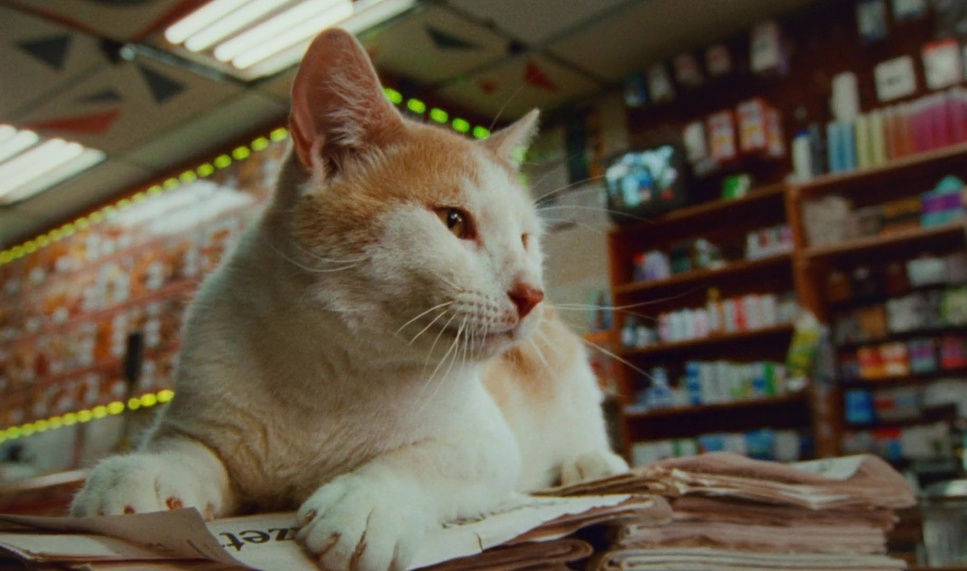
＋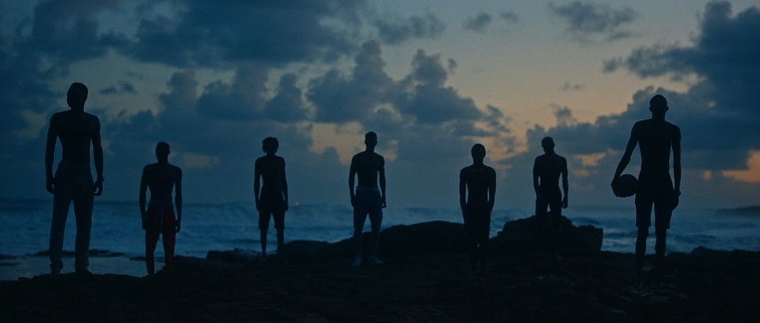
＋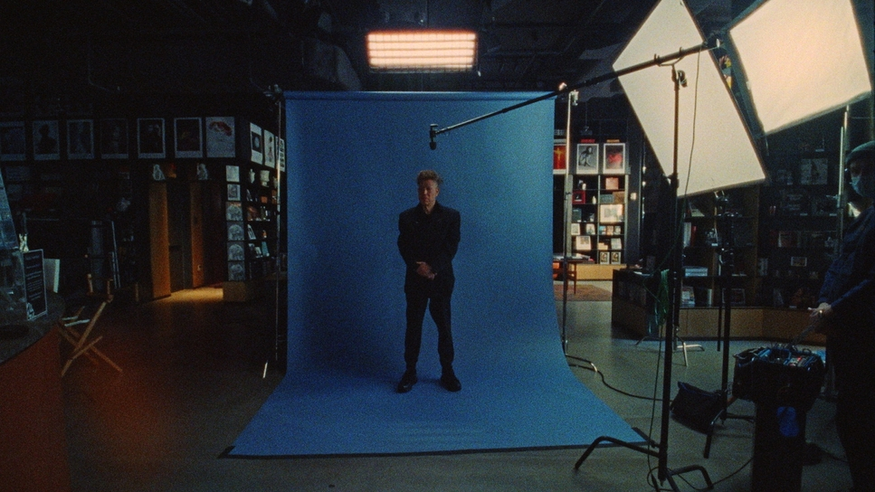
＋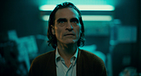
＋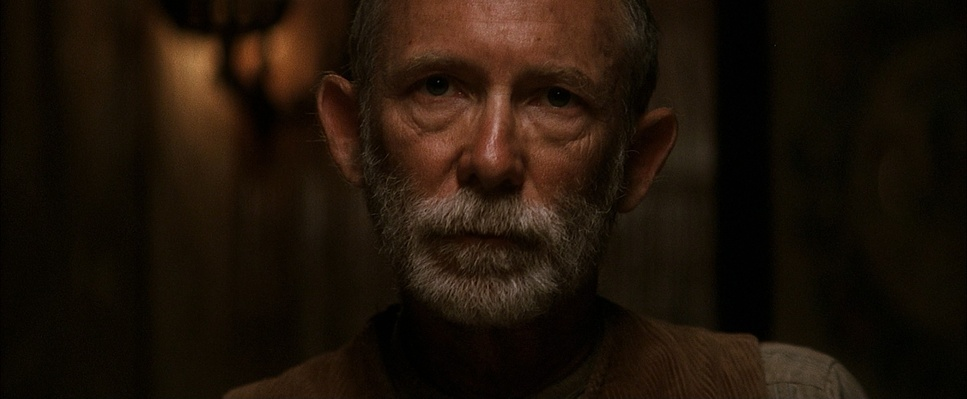
＋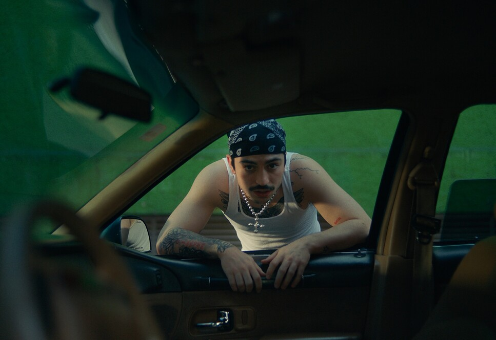
＋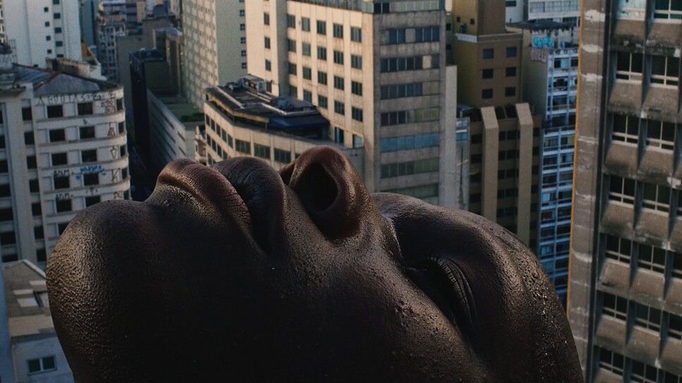
＋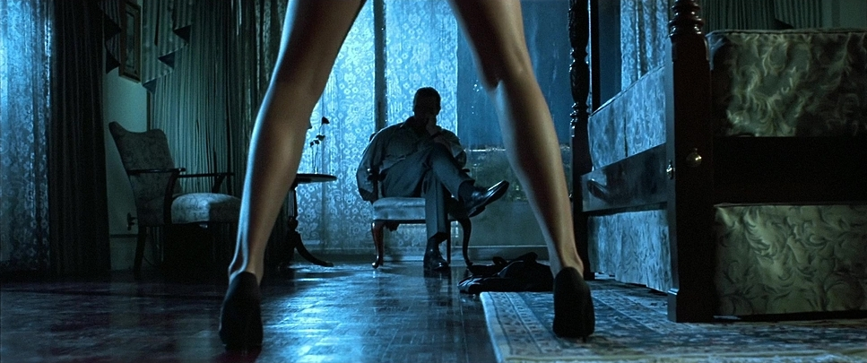
＋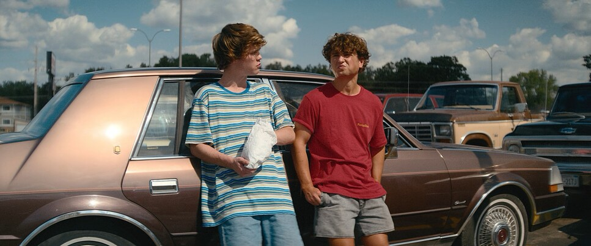
＋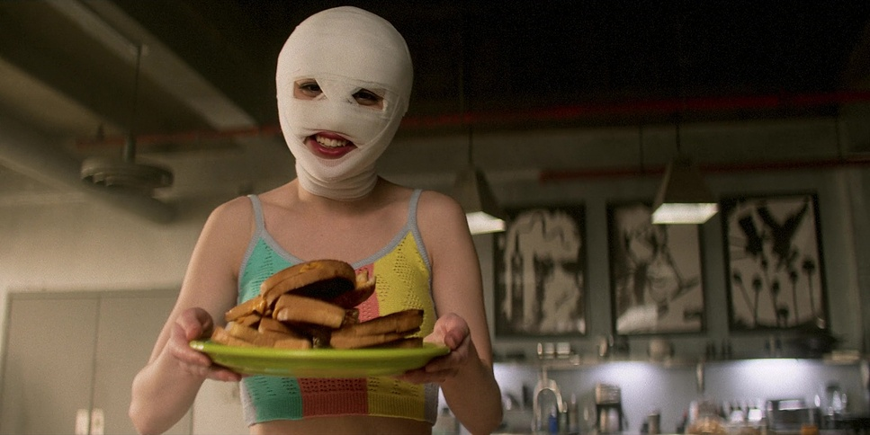
＋同期錄音只能拿到現場真實發生的聲音。畫面剪完之後，常常需要補上不存在的空間、腳步與環境層。這一段是額外的工作，也是預算裡最容易被砍、砍完最容易被看出來的一段。
可以。把 OMF/AAF 與參考影片給我，我按 EBU R128 交付 −23 LUFS 的立體聲與 5.1 母帶，附 M&E 國際聲軌。前提是素材本身乾淨——如果現場收音有問題，我會先告訴你哪一段救不回來。
接。差旅另計，混音與聲音設計的部分可以遠端完成，只需要在交付前做一次線上審片。時區不是問題，檔案傳輸用加密連結。
我用自己的素材庫，授權乾淨、可追溯，交付時會附一份來源清單。需要使用第三方素材庫時會先報價並取得你的書面同意——這是唯一會讓後期卡住的地方，早點說清楚最省事。
案子洽談、素材交付或單純想聊聊聲音都可以寫在這裡，留言會存進雲端，不會丟。也可以直接來信 hallo@dkton.at。